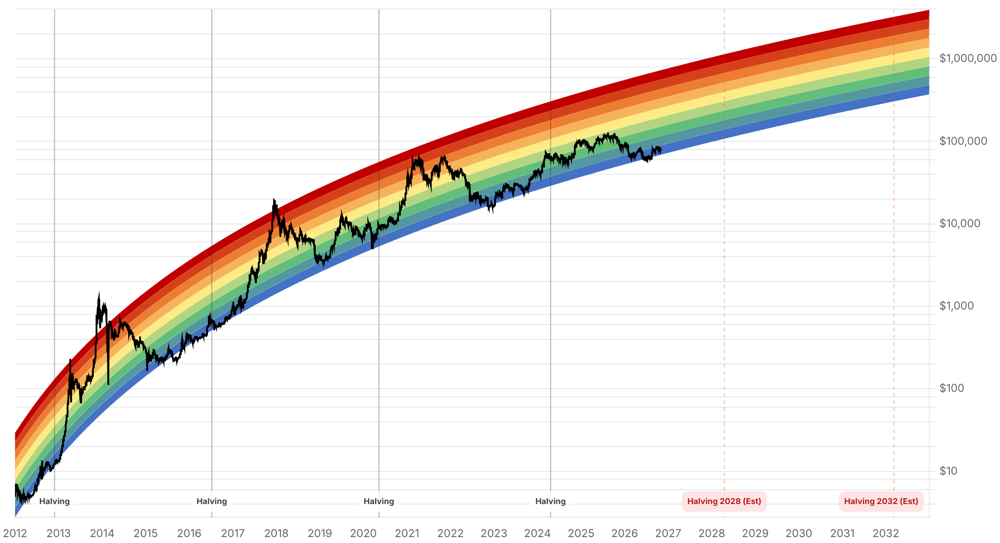

Reporte financiero
BTC cotiza en USD 78.040,11 en vivo (07:17 UTC), con una leve caída intradía (-0,25%) y prácticamente estable frente al cierre de ayer (USD 78.248,45) tras la recuperación de los últimos dos días desde el mínimo de USD 77.198,21 del 30 de octubre. Lo nuevo desde el reporte de ayer: Binance confirmó la reapertura efectiva de retiros el domingo 1 de noviembre -lo que ayer era solo un plan sujeto a revisiones de seguridad-, en ventanas escalonadas por red (la primera corrió de 06:00 a 09:00 UTC, comenzando por Bitcoin) y ya cubre 15 blockchains, incluyendo Ethereum, BNB Smart Chain, XRP, Base, Dogecoin, Solana, Tron, Arbitrum, Avalanche, Polygon, Zcash y Sui. La cobertura del hackeo avanzó de 90% a 95% de los ~USD 6.300M robados, usando fondos propios de la compañía. La cofundadora de Binance, Yi He, señaló que los retiros corren 'fairly smoothly' pero advirtió sobre posible congestión si hay muchas solicitudes simultáneas, y pidió a los usuarios verificar direcciones de retiro. Billeteras rastreadas de Binance registraron ~USD 2.510M en salidas netas solo el 1 de noviembre (DeFiLlama, vía CryptoSlate) -mayormente en USDT (~1.083M), BTC (~912M) y USDC (~385M)-, aunque la fuente advierte que esta cifra no debe leerse como una medida limpia de salida de clientes, porque buena parte del movimiento corresponde a traslados hacia las nuevas billeteras que Binance generó tras el incidente, no necesariamente a retiros hacia fuera del ecosistema. El Fear & Greed Index continuó su mejora gradual, subiendo de 34 a 37 (tercer día consecutivo de recuperación desde 30 el 31 de octubre), coherente con una reapertura de retiros percibida hasta ahora como ordenada. Sin novedades verificadas desde ayer en la regla de exclusión de MSCI sobre Strategy (sigue con la misma fecha clave del 11 de noviembre para la lista final y el 30 de noviembre para la entrada en vigor, sin nueva información que cambie las estimaciones de salidas pasivas ya reportadas), en la Clarity Act (sigue estancada sin votación de piso confirmada), en la apelación del fallo del Reino Unido sobre los 61.000 BTC (sigue proyectada sin fecha fija, posiblemente 2027), ni en la respuesta de Cantor Fitzgerald al requerimiento del senador Blumenthal sobre sus vínculos con Tether. Se omiten nuevamente cifras de flujos semanales de ETFs de Bitcoin por falta de un dato específico y confiable para la semana del 27 al 31 de octubre.
A diferencia de ayer, cuando la reapertura de retiros era solo un plan para el domingo sujeto a revisiones de seguridad finales, hoy se confirma que Binance efectivamente reabrió retiros el 1 de noviembre en ventanas escalonadas: la primera corrió de 06:00 a 09:00 UTC, comenzando por Bitcoin y sumando rápidamente Ethereum, USDT, USDC, BNB y XRP, hasta alcanzar 15 blockchains en total -incluyendo también Base, Dogecoin, Optimism, Solana, Tron, Arbitrum, Avalanche, Polygon, Zcash y Sui-, con activos individuales habilitándose a medida que terminan las revisiones de seguridad por red. La cobertura de los fondos robados subió de 90% (reportado ayer) a 95% de los ~USD 6.300M, usando fondos propios de la compañía; TRM Labs detalló el desglose del robo original en 18.270 BTC (~USD 1.470M), 200.630 ETH, 1.875M USDT, 823M USDC, 233,46M XRP y 970.500 SOL. La cofundadora de Binance, Yi He, declaró: 'Things are currently running fairly smoothly. If there are many withdrawal requests, congestion cannot be ruled out', y pidió a los usuarios verificar sus direcciones de retiro y asegurar sus dispositivos. Billeteras de Binance rastreadas por DeFiLlama registraron ~USD 2.510M en salidas netas solo el 1 de noviembre -USDT (~1.083M), BTC (~912M), USDC (~385M) y WETH (~131M)-, coincidiendo con la reapertura escalonada; CryptoSlate advierte que esta cifra no es una medida limpia de salida de clientes, ya que parte del movimiento corresponde a traslados hacia las nuevas billeteras que Binance generó como parte de la respuesta al incidente, y no necesariamente a salidas hacia fuera del ecosistema Binance. Fuentes: CoinDesk (1-nov-2026) y CryptoSlate (1-nov-2026).
La regla de MSCI que podría excluir a Strategy de sus índices mantiene las mismas fechas clave reportadas ayer -anuncio de la lista final el 11 de noviembre, entrada en vigor tras el cierre del 30 de noviembre- sin nueva información pública que modifique las estimaciones de salidas pasivas (JPMorgan en el rango de USD 2.800M a cifras de un orden mayor si otros proveedores de índices siguen el mismo camino, con estimaciones que varían algo según la fuente consultada entre ayer y hoy, sin un dato más preciso que reemplace lo ya reportado). Tampoco hay novedades en la Clarity Act -sigue estancada tras el cloture fallido del 15 de septiembre, sin votación de piso confirmada para noviembre-, ni en la apelación al fallo del Reino Unido sobre los 61.000 BTC -los abogados de las víctimas (Fieldfisher) siguen proyectando una apelación sin fecha de audiencia confirmada, posiblemente en 2027-, ni en la respuesta de Cantor Fitzgerald al requerimiento de registros del senador Blumenthal sobre sus vínculos con Tether (vencido el 23 de octubre), ni evidencia de una investigación formal abierta por el Tesoro o el Departamento de Justicia.
| Periodo | Valor |
|---|---|
| 27 oct | 80805.08 |
| 28 oct | 81267.59 |
| 29 oct | 77775.11 |
| 30 oct | 77198.21 |
| 31 oct | 77434.75 |
| 1 nov | 78248.45 |
| 2 nov (en vivo) | 78040.11 |
| Periodo | Valor |
|---|---|
| Hoy | 37 |

“Things are currently running fairly smoothly. If there are many withdrawal requests, congestion cannot be ruled out.”
“Binance has now covered approximately 95% of the impacted amount, up from 90% in our prior update.”
La reapertura de retiros de Binance, ya confirmada y en curso desde el 1 de noviembre en 15 redes, reduce la principal incertidumbre de corto plazo que quedaba abierta ayer. El riesgo residual es que la congestión advertida por Yi He derive en nuevos retrasos, o que el 5% restante de activos menos líquidos resulte más difícil de cubrir -cualquiera de esos escenarios podría frenar la mejora del Fear & Greed Index (30→34→37 en tres días). Las salidas rastreadas de ~USD 2.510M del 1 de noviembre, aunque no son una señal limpia de fuga de clientes según CryptoSlate, son el dato a vigilar en las próximas jornadas para distinguir movimiento operativo de salida real de capital.
Sin cambios desde ayer: la regla de MSCI sobre Strategy (vigente desde el 30 de noviembre, lista final el 11 de noviembre) sigue como el principal frente de riesgo pendiente para MSTR como proxy de Bitcoin, con estimaciones de salidas pasivas que varían según la fuente pero se mantienen en el orden de miles de millones de dólares si otros proveedores de índices siguen a MSCI. La Fed sostuvo tasas en 3,75-4% el 28 de octubre, sin cambios desde ayer en la presión de financiamiento sobre activos de riesgo.
Sin cambios en los objetivos de precio de largo plazo ya reportados en ediciones anteriores (Citigroup, Bernstein, Standard Chartered, Tom Lee, NYDIG, Armstrong). La resolución cada vez más ordenada del hackeo de Binance (95% cubierto, retiros ya operativos en 15 redes) sigue reduciendo el riesgo reputacional de corto plazo para la infraestructura de exchanges centralizados, sin alterar los catalizadores estructurales ya identificados (adopción institucional, halving de 2028, marco regulatorio pendiente vía Clarity Act).
Los ~USD 2.510M en salidas rastreadas de Binance el 1 de noviembre coinciden con el traslado de fondos a las nuevas billeteras generadas tras el incidente, no necesariamente con retiros hacia fuera del ecosistema. Vigilar si ese flujo se sostiene o se revierte en los próximos días para distinguir ruido operativo de una fuga de capital genuina.
Yi He no descartó congestión si hay muchas solicitudes de retiro simultáneas. Un retraso visible en alguna de las 15 redes habilitadas podría revertir rápidamente la mejora reciente del Fear & Greed Index.
Sin novedades desde ayer, pero la fecha se acerca: la confirmación o no de la exclusión de Strategy de los índices de MSCI sigue siendo un riesgo específico para quienes tengan exposición a MSTR como proxy de Bitcoin, independiente del precio de BTC en sí.